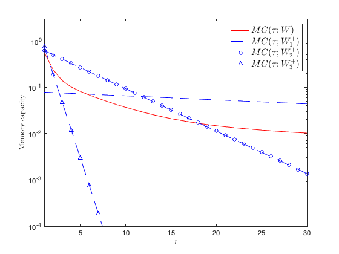
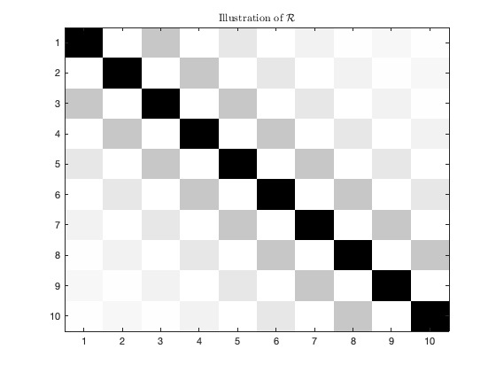

Section 5.3: Recurrent neural nets: echo-state networks (ESNs)
This page contains simulations in Section 5.3.
Contents
Memory curve for block Haar 
close all; clear; clc c = .75; c1 = 0.01; alpha1 = 0.99; c2 = 0.1; alpha2 = 0.9; c3 = 0.89; alpha3 = 0.5; taus = linspace(1,30,30); MC_multip = ( c1*alpha1.^(2*taus) + c2*alpha2.^(2*taus) + c3*alpha3.^(2*taus) )/( c1/(1-alpha1^2) + c2/(1-alpha2^2) + c3/(1-alpha3^2) )/(1-c); MC1 = ( alpha1.^(2*taus)*(1-alpha1^2) )/(1-c); MC2 = ( alpha2.^(2*taus)*(1-alpha2^2) )/(1-c); MC3 = ( alpha3.^(2*taus)*(1-alpha3^2) )/(1-c); figure semilogy(taus, MC_multip, 'r') hold on semilogy(taus, MC1, 'b--') semilogy(taus, MC2, 'bo-') semilogy(taus, MC3, 'bs-') legend('$MC(\tau;W)$', '$MC(\tau;W_1^+)$', '$MC(\tau;W_2^+)$', '$MC(\tau;W_3^+)$', 'Interpreter', 'latex', 'FontSize', 15) axis([1, 30, 1e-4, 3]) xlabel('$\tau$', 'Interpreter', 'latex') ylabel('Memory capacity', 'Interpreter', 'latex')
Illustration of for non-symmetric and (Wigner) symmetric Gaussian
close all; clc; clear; choice_W = 'Wigner'; % 'iid', 'Wigner', 'Haar' alpha = 0.9; n = 200; T = 400; switch choice_W case 'iid' W = randn(n)/sqrt(n); W = W/max(abs(eig(W))); W = alpha*W; case 'Wigner' W = randn(n)/sqrt(n); W = triu(W,1)+tril(W',-1)+diag(randn(n,1)/sqrt(n)); W = W/abs(eigs(W,1)); W = alpha*W; case 'Haar' W = randn(n)/sqrt(n); W = (W*W')^(-1/2)*W; W = W/max(abs(eig(W))); W = alpha*W; end pW = zeros(n,n,T); pW(:,:,1)=eye(n); pWW = zeros(n,n,T); pWW(:,:,1)=eye(n); for i=2:T pW(:,:,i)=W*pW(:,:,i-1); pWW(:,:,i)=W*pWW(:,:,i-1)*W'; end sumpWW = sum(pWW,3); S=zeros(n,n,T); for i=1:T S(:,:,i)=sumpWW*pW(:,:,i)'; end start_R=n/T/abs(1-n/T)*eye(T); start_tR=abs(1-n/T)*sumpWW; [R,tR]=computeR(n,T,S,start_R,start_tR); figure colormap gray imagesc(1-R(1:10,1:10)); title('Illustration of $\mathcal{R}$','Interpreter', 'latex')
FUNCTIONS
function [R,tR]=computeR(n,T,S,start_R,start_tR) if n<T dIn=0; dIT=eye(T); else dIn=eye(n); dIT=0; end Rtmp = zeros(T); R = start_R; tR= start_tR; while max(abs((R(:)-Rtmp(:))))>1e-15 Rtmp=R; invtR = inv(dIn+tR); r=zeros(1,T); for q=1:T r(q)=1/n*trace(S(:,:,q)*invtR); end R = n/T*toeplitz(r); inv_I_R = inv(dIT+R); tR = 1/T*trace(inv_I_R)*S(:,:,1); for q=2:T tR = tR + 1/T*sum(diag(inv_I_R,q-1))*(S(:,:,q)+S(:,:,q)'); end max(abs(R(:)-Rtmp(:))); end end